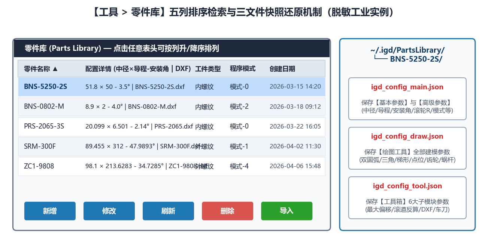

8.1 零件库：参数归档、排序检索与一键导入
点击主窗口顶部菜单栏 工具 ➔ 零件库，即可打开独立的 零件库（Parts Library） 窗口。

零件库实机运行截图">一、零件库五列表格与双向排序
零件库支持对全部归档零件按以下 5 列进行信息展示与升降序点击排序：
零件名称：产品代号或工件图号，支持按字母/数字字典序双向排序。配置详情：自动提炼的核心螺旋参数标签（格式：<齿形类型>-中径<d2>-导程<Ph>-<旋向>）。工件类型：标示内螺纹或外螺纹，方便按磨削类型集中归类。程序模式：标示所使用的数控系统宏程序模板代号（如模式-0、模式-2、模式-5）。创建日期：参数建档或最后修改时间戳（YYYY-MM-DD HH:MM）。
二、三文件自包含归档机制
当在零件库中点击 新增 保存一个零件档案时，系统会在本地持久化目录 ~/.igd/PartsLibrary/<零件名>/ 下自动生成自包含三文件：
igd_config_main.json：完整记录当前主界面基本参数与高级参数的全部数值及状态。igd_config_draw.json：完整快照记录绘图工具各子模块的参数。igd_config_tool.json：完整快照记录工具箱各子模块的参数。
数据安全保证：换用电脑或升级软件时，只需将整个
~/.igd/PartsLibrary/文件夹打包复制到新工控机对应目录下，点击零件库中的刷新即可完整恢复，绝对不会丢失任何历史工艺参数！
三、五大操作按钮速查
新增：以当前主界面调试好的全部参数创建一个新的零件档案。导入：选中表格行后点击，一键将该零件的所有参数自动回填至主界面，可直接点击生成代码。修改：重命名零件或以主界面当前最新数据覆盖保存。刷新：重新扫描本地零件库目录（用于加载外部手动拷贝进来的档案）。删除：安全移除选中的历史零件档案。